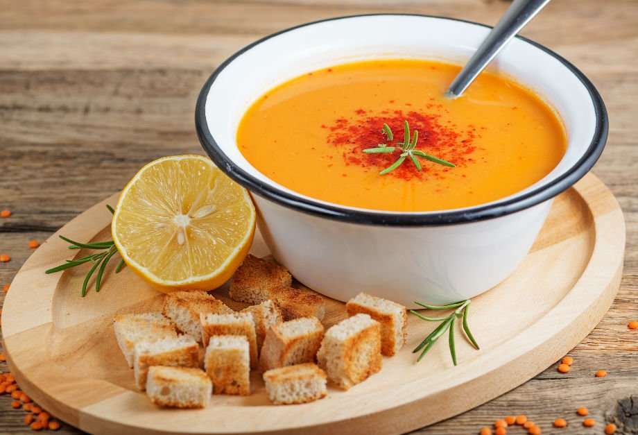

mercimek çorbası

malzemeler
- 3 yemek kaşığı
ayçiçek yağı
- 1 adet
kuru soğan
(iri doğranmış)
-
yemek kaşığı
un
-
adet
havuç
(iri doğranmış)
- 1
adet
patates
(büyük boy, iri doğranmış)
-
tatlı kaşığı
tuz
- 1
çay kaşığı
karabiber
- 5
su bardağı
kırmızı ya da sarı mercimek
-
su bardağı
sıcak su
(1 adet et su tablet ile hazırlanmış)
yapılışı
- Derin bir tencereye 3 yemek kaşığı sıvı yağ ekleyin.
İri doğranmış 1 adet büyük soğanı sıvı yağ ile birlikte kavurun.
- Kavrulan soğanlara 1 yemek kaşığı unu ekleyin
ve kokusu çıkıp, renk alana kadar kavurma işlemini sürdürün.
İri parçalar halinde doğradığınız birer adet havuç
ve patatesi tencereye aktarıp karıştırmaya devam edin.
- Tuz, karabiber ve bol suda yıkadıktan sonra
suyunu süzdürdüğünüz 1,5 su bardağı mercimeği de ilave edin
ve son kez güzelce karıştırın
- 6 su bardağı sıcak suyu da tencereye ilave edin.
40 dk pişirin